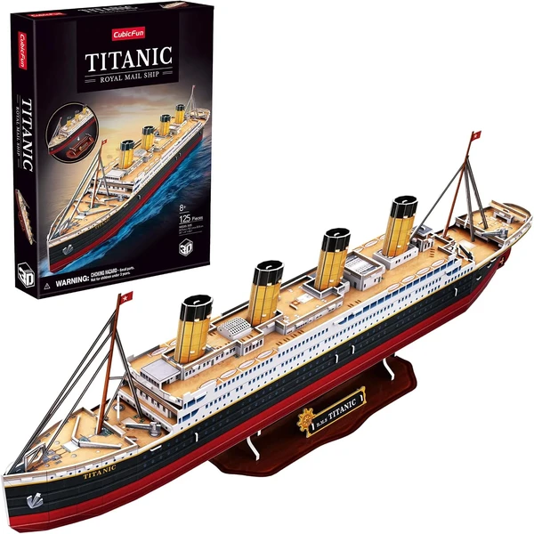
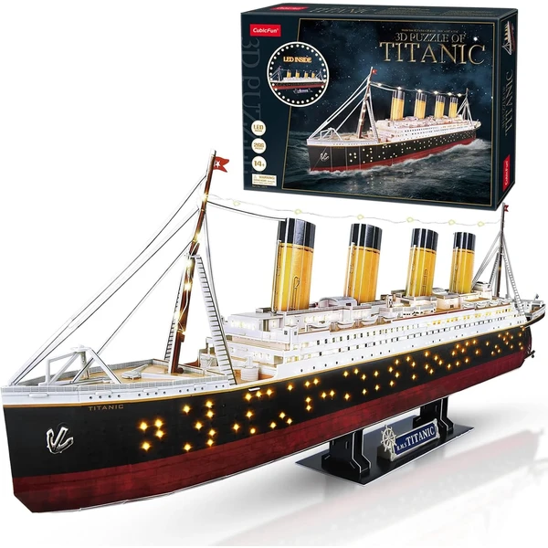

✨ Guía especial
Puzzle 3D del Titanic: modelos, marcas y versión con luz LED
Qué incluye la maqueta y qué marca elegir
Qué incluye la maqueta y qué marca elegir
El Titanic es el barco más popular con diferencia dentro de la categoría de vehículos en puzzle 3D. En esta guía repasamos qué incluye la maqueta, el efecto que consigue la versión con luz LED en los camarotes, y qué marca elegir entre las dos principales del mercado.
La maqueta reproduce el casco y la superestructura del barco con el nivel de detalle habitual en este tipo de réplicas, incluyendo las icónicas chimeneas. El número de piezas varía según la versión, desde modelos más compactos hasta réplicas de mayor tamaño y detalle — conviene revisar la ficha de producto si buscas un tamaño final concreto para exponer la maqueta terminada.

Titanic Ver en Amazon →La versión con luz LED del Titanic es una de las más populares de toda la categoría de vehículos: un circuito interno ilumina las ventanas de los camarotes del barco, recreando el efecto de las luces encendidas a bordo de noche — un extra que en este modelo concreto luce especialmente bien por la cantidad de ventanas repartidas a lo largo del casco. Sube el precio frente a la versión estándar, así que conviene comprobar bien en la ficha de producto si la versión que estás viendo la incluye.

Titanic Led Ver en Amazon →CubicFun es la marca dominante en este modelo concreto: la mayoría de versiones del Titanic en puzzle 3D, incluida la de luz LED, son de esta marca, con buena relación calidad-precio.
Ravensburger ofrece una alternativa con mayor precisión de pieza, aunque con menos presencia que CubicFun en este modelo en particular — a diferencia de lo que vimos en Harry Potter o Torre Eiffel, donde Ravensburger llevaba la delantera, aquí es CubicFun quien domina claramente.
Tanto la versión estándar como la de luz LED se encuentran principalmente en Amazon, donde hay más variedad disponible de forma constante entre ambas marcas.
CubicFun es la marca dominante en este modelo, con la mayoría de versiones disponibles incluida la de luz LED. Ravensburger ofrece mayor precisión de pieza, pero con menos presencia en este modelo concreto.
Ilumina las ventanas de los camarotes del barco, recreando el efecto de las luces encendidas de noche a bordo — un extra que luce especialmente bien por la cantidad de ventanas repartidas a lo largo del casco.
Varía según la versión, desde modelos más compactos hasta réplicas de mayor tamaño y detalle. Conviene revisar la ficha de producto si buscas un tamaño final concreto.
Principalmente en Amazon, con más variedad disponible de forma constante entre ambas marcas.
Todos los tipos, materiales, marcas y modelos según la edad.